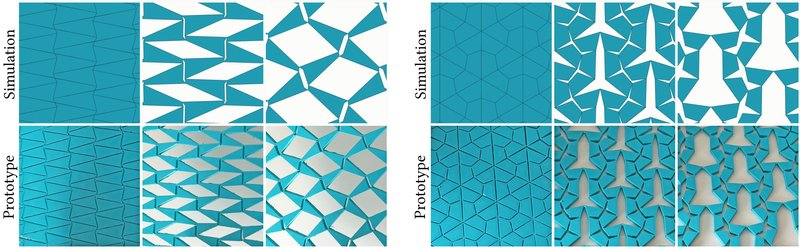
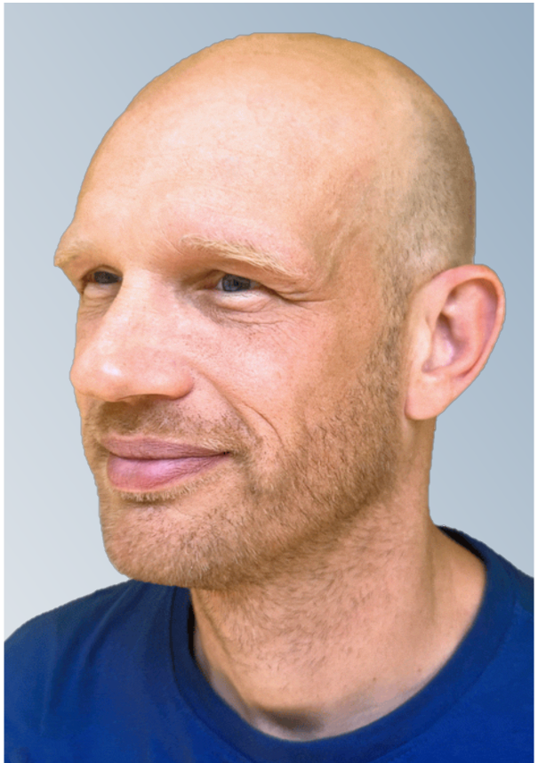
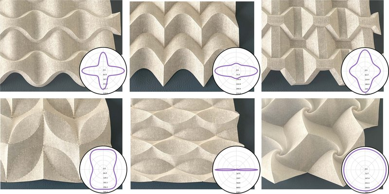
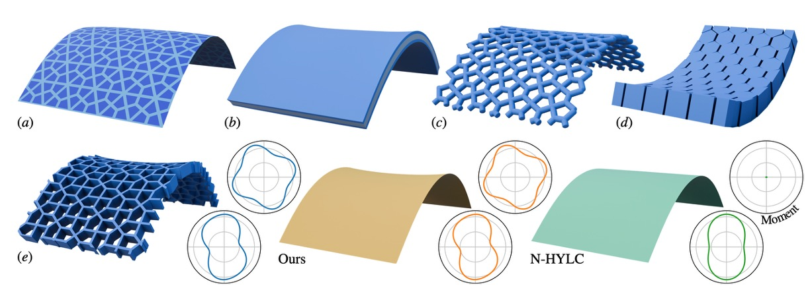
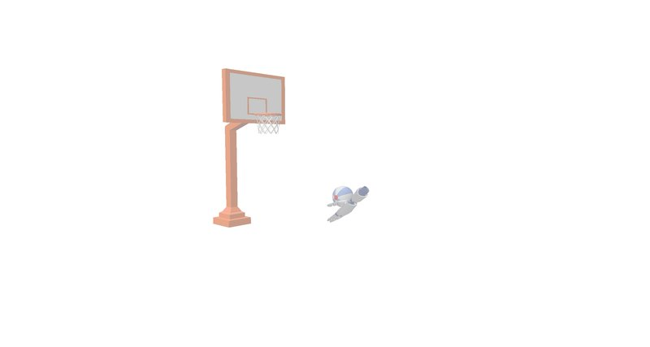
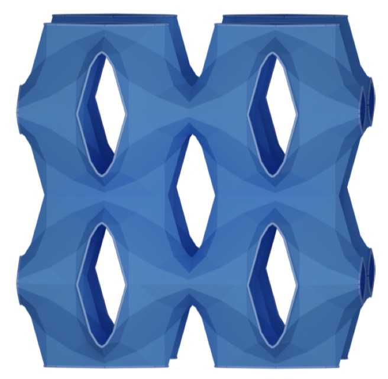
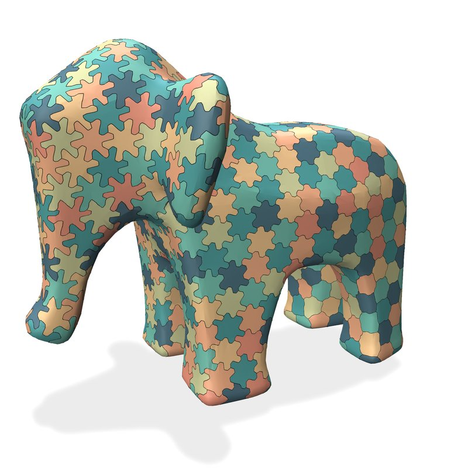
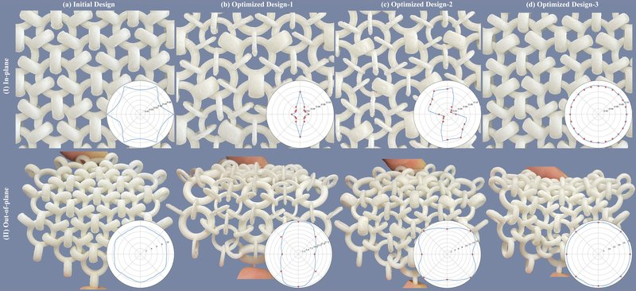
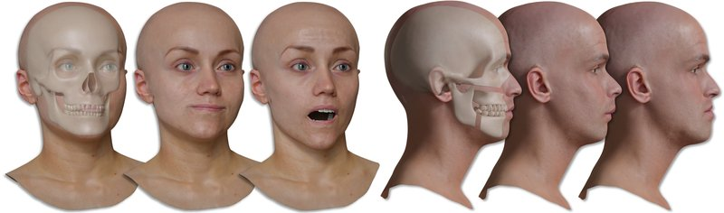

IsoGami: Rigid-Deployable Kirigami Materials From Isohedral Tilings
ACM SIGGRAPH 2026 Conference Papers



My research lies at the intersection of computer graphics, computational mechanics, and digital manufacturing, where I develop computational methods for modeling and design of complex physical systems. I am particularly interested in applications to mechanical metamaterials, robotics, and digital humans, leveraging physics-based simulation, optimization-driven design, and neural representations to bridge the gap between virtual models and real-world performance.
I obtained my PhD from the University of Tübingen in 2010, followed by a postdoctoral stay at the Computer Graphics Laboratory at ETH Zurich. I joined Disney Research Zurich in 2011, where I spent six years as a researcher and group leader. In 2017, I moved to the University of Montreal, where I was a tenured professor in the Computer Science department until 2020. I am currently a Senior Research Scientist at the Computational Robotics Laboratory (CRL).
I received the Outstanding Young Researcher Award from the Canadian Computer Science Association in 2018 and was named NSERC Canada Research Chair in 2019.

IsoGami: Rigid-Deployable Kirigami Materials From Isohedral Tilings
ACM SIGGRAPH 2026 Conference Papers

A Unified Homogenization Framework for Straight- and Curved-Crease Origami Materials
ACM Transactions on Graphics (Proc. ACM SIGGRAPH 2026)

Taking a Moment to Characterize the Bending Response of Thin Sheet Materials
Computer Graphics Forum (Proc. Eurographics Symposium on Geometry Processing, SGP 2026), Vol. 45, No. 5

Momentum-Conserving Graph Neural Networks for Deformable Objects
International Conference on 3D Vision 2026

Star-Shaped Distance Voronoi Diagrams for 3D Metamaterial Design
Proc. ACM SIGGRAPH Asia, 2025

Closed-Form Construction of Voronoi Diagrams with Star-Shaped Metrics
ACM Transactions on Graphics (Proc. ACM SIGGRAPH Asia 2025)

